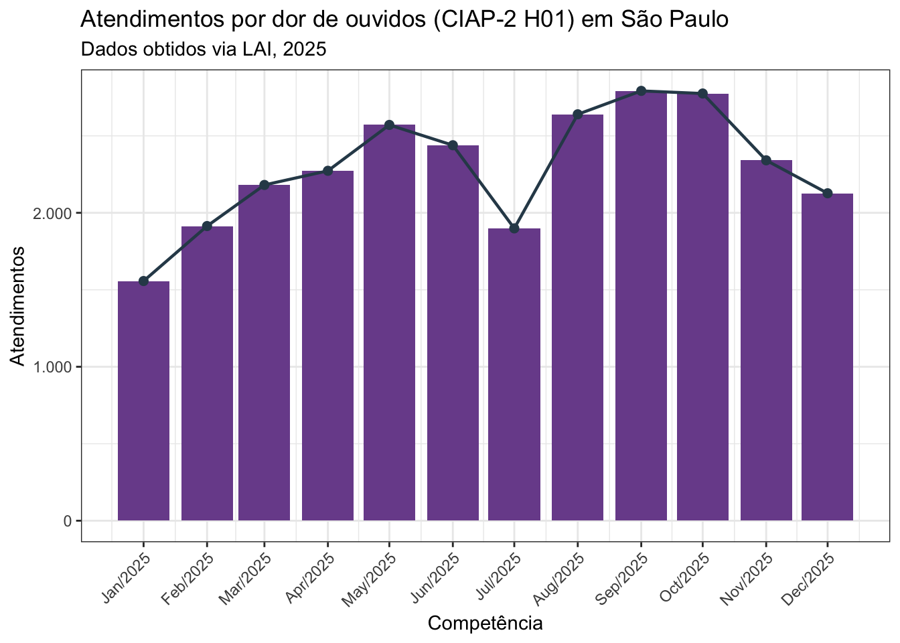
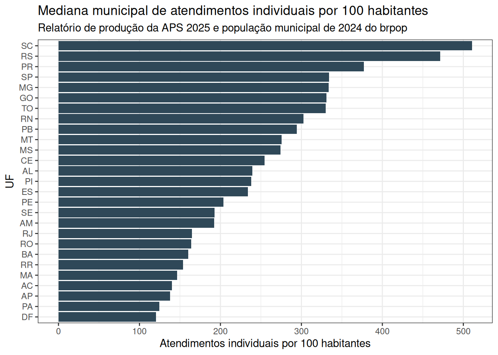

library(arrow)
library(brpop)
library(dplyr)
library(geobr)
library(ggplot2)
library(knitr)
library(purrr)
library(sf)
library(tidyr)
library(zendown)
depositos_producao <- tibble::tribble(
~ano, ~deposit_id,
2014, 20597219,
2015, 20597219,
2016, 20597219,
2017, 20594700,
2018, 20595666,
2019, 20595800,
2020, 20595848,
2021, 20595931,
2022, 20596062,
2023, 20596123,
2024, 20597035,
2025, 20597086,
2026, 20597157
) |>
mutate(file_name = paste0("sisab_saude_producao_", ano, ".parquet"))
arquivos_producao <- depositos_producao |>
mutate(
path = map2_chr(
deposit_id,
file_name,
~ zen_file(deposit_id = .x, file_name = .y)
)
)
depositos_lai <- tibble::tribble(
~ano, ~deposit_id,
2017, 20594700,
2018, 20595666,
2019, 20595800,
2020, 20595848,
2021, 20595931,
2022, 20596062,
2023, 20596123,
2024, 20597035,
2025, 20597086,
2026, 20597157
) |>
mutate(file_name = paste0("sisab_saude_ciap_cid_", ano, ".parquet"))
arquivos_lai <- depositos_lai |>
mutate(
path = map2_chr(
deposit_id,
file_name,
~ zen_file(deposit_id = .x, file_name = .y)
)
)A Atenção Primária à Saúde (APS) é a principal porta de entrada do SUS e produz continuamente informações importantes sobre atendimentos, visitas, procedimentos, problemas avaliados e condições acompanhadas nos municípios brasileiros.
Esta base organiza dados do SISAB/SIAPS, obtidos nos relatórios de produção e por pedidos via LAI, em arquivos abertos, documentados e adequados para análises reprodutíveis. O objetivo é facilitar o uso de séries municipais mensais da APS, reduzindo a dependência de consultas manuais em relatórios web e reunindo dados complementares obtidos por transparência passiva.
Fontes de dados
Os dados combinam duas fontes relacionadas ao SISAB/SIAPS. A primeira fonte é o site de relatórios públicos do SISAB, em especial o relatório de Saúde: Atendimento/Visita. Esses relatórios permitem consultar informações agregadas de produção, procedimentos e problemas ou condições avaliadas por município e competência.
A segunda fonte são dados obtidos via Lei de Acesso à Informação (LAI). Esses pedidos são necessários porque as contagens de atendimentos por códigos CID-10 e CIAP-2 não estão disponíveis, atualmente, em transparência ativa no SISAB/SIAPS e são de difícil obtenção nos relatórios públicos do SISAB. As respostas recebidas via LAI são usadas para organizar séries mensais de atendimentos por município, competência e código diagnóstico ou de motivo de consulta.
Método
Os dados públicos do SISAB são extraídos com o repositório sisab_scrapper, que automatiza a coleta mensal dos relatórios de produção, procedimentos e problemas/condições avaliadas. Para cada competência, tipo de relatório, faixa etária e sexo, o fluxo baixa o relatório municipal do SISAB para todo o Brasil. Os resultados são combinados em arquivos tabulares anuais nos formatos CSV compactado e Parquet. As bases públicas têm as variáveis competencia, uf, ibge, municipio, faixa_etaria, sexo, uma variável de categoria do relatório e valor.
Os dados recebidos via LAI são processados com o repositório sisab_lai. O fluxo identifica arquivos válidos, resolve sobreposições entre pedidos, padroniza diferenças de esquema entre respostas, preserva informações de proveniência e exporta arquivos anuais em CSV compactado e Parquet. Esses arquivos contêm contagens mensais por município, tipo de código (CID ou CIAP), código e quantidade de atendimentos.
As atualizações serão mensais. Novas competências serão incorporadas conforme forem disponibilizadas no site do SISAB e novos pedidos mensais via LAI serão feitos até que o SISAB/SIAPS ofereça transparência ativa para os dados de atendimentos por CID-10 e CIAP-2.
Acesso aos dados
Os dados estão disponibilizados no Zenodo. Os depósitos estão organizados por ano ou período e contêm arquivos nos formatos CSV compactado e Parquet.
| Período | Depósito Zenodo | Conteúdo principal |
|---|---|---|
| 2014-2016 | 10.5281/zenodo.20597219 | Produção, procedimentos e condições avaliadas do SISAB público |
| 2017 | 10.5281/zenodo.20594700 | SISAB público e atendimentos CID/CIAP via LAI |
| 2018 | 10.5281/zenodo.20595666 | SISAB público e atendimentos CID/CIAP via LAI |
| 2019 | 10.5281/zenodo.20595800 | SISAB público e atendimentos CID/CIAP via LAI |
| 2020 | 10.5281/zenodo.20595848 | SISAB público e atendimentos CID/CIAP via LAI |
| 2021 | 10.5281/zenodo.20595931 | SISAB público e atendimentos CID/CIAP via LAI |
| 2022 | 10.5281/zenodo.20596062 | SISAB público e atendimentos CID/CIAP via LAI |
| 2023 | 10.5281/zenodo.20596123 | SISAB público e atendimentos CID/CIAP via LAI |
| 2024 | 10.5281/zenodo.20597035 | SISAB público e atendimentos CID/CIAP via LAI |
| 2025 | 10.5281/zenodo.20597086 | SISAB público e atendimentos CID/CIAP via LAI |
| 2026 (incompleto) | 10.5281/zenodo.21221727 | SISAB público e atendimentos CID/CIAP via LAI |
Exemplo de análise em R
O exemplo abaixo usa os arquivos Parquet de produção da APS (sisab_saude_producao_YYYY.parquet). Eles são baixados com o pacote {zendown}, lidos com {arrow} e analisados com {dplyr}.
Tabela
Esta primeira tabela resume os maiores tipos de produção registrados em 2025.
producao_2025 <- read_parquet(
arquivos_producao$path[arquivos_producao$ano == 2025]
)
tabela_tipo_producao <- producao_2025 |>
group_by(tipo_producao) |>
summarise(total = sum(valor, na.rm = TRUE), .groups = "drop") |>
arrange(desc(total)) |>
slice_head(n = 10) |>
mutate(total = format(total, big.mark = ".", decimal.mark = ","))
kable(
tabela_tipo_producao,
col.names = c("Tipo de produção", "Total em 2025")
)| Tipo de produção | Total em 2025 |
|---|---|
| Visita Domiciliar | 777.683.286 |
| Procedimento | 703.182.832 |
| Atendimento Individual | 414.480.295 |
| Atendimento Odontológico | 56.863.372 |
Evolução temporal
A série temporal agrega todos os municípios, faixas etárias, sexos e tipos de produção por competência mensal.
serie_temporal <- arquivos_producao$path |>
map_dfr(\(path) {
read_parquet(path) |>
group_by(competencia) |>
summarise(total = sum(valor, na.rm = TRUE), .groups = "drop")
}) |>
mutate(
competencia = as.character(competencia),
data = as.Date(paste0(competencia, "01"), format = "%Y%m%d")
) |>
arrange(data)
ggplot(serie_temporal, aes(x = data, y = total)) +
geom_line(linewidth = 0.8, color = "#15616d") +
scale_y_continuous(labels = scales::label_number(big.mark = ".", decimal.mark = ",")) +
labs(
title = "Produção mensal da Atenção Primária à Saúde no Brasil",
x = "Competência",
y = "Total registrado"
) +
theme_bw()
Atendimentos por dor de ouvidos em São Paulo
Os dados recebidos via LAI permitem analisar atendimentos por códigos específicos de CID-10 ou CIAP-2. O exemplo abaixo usa o código CIAP-2 H01, referente a dor de ouvidos, no município de São Paulo em 2025. Nos arquivos da LAI, a variável co_municipio_ibge usa o código municipal com 6 dígitos; por isso, São Paulo aparece como 355030.
arquivo_lai_2025 <- arquivos_lai$path[arquivos_lai$ano == 2025]
atendimentos_h01_sp_2025 <- open_dataset(arquivo_lai_2025) |>
filter(
co_municipio_ibge == "355030",
tp_codigo == "CIAP",
codigo == "H01"
) |>
group_by(competencia, competencia_date) |>
summarise(
atendimentos = sum(qt_atendimentos, na.rm = TRUE),
.groups = "drop"
) |>
collect() |>
complete(
competencia = sprintf("2025%02d", 1:12),
fill = list(atendimentos = 0)
) |>
mutate(
competencia_date = as.Date(paste0(competencia, "01"), format = "%Y%m%d")
) |>
arrange(competencia)
resumo_h01_sp_2025 <- tibble::tibble(
indicador = c(
"Total de atendimentos em 2025",
"Mês com maior quantidade",
"Mês com menor quantidade"
),
valor = c(
format(sum(atendimentos_h01_sp_2025$atendimentos), big.mark = ".", decimal.mark = ","),
format(
atendimentos_h01_sp_2025$atendimentos[
which.max(atendimentos_h01_sp_2025$atendimentos)
],
big.mark = ".",
decimal.mark = ","
),
format(
atendimentos_h01_sp_2025$atendimentos[
which.min(atendimentos_h01_sp_2025$atendimentos)
],
big.mark = ".",
decimal.mark = ","
)
),
competencia = c(
"2025",
atendimentos_h01_sp_2025$competencia[
which.max(atendimentos_h01_sp_2025$atendimentos)
],
atendimentos_h01_sp_2025$competencia[
which.min(atendimentos_h01_sp_2025$atendimentos)
]
)
)
kable(
resumo_h01_sp_2025,
col.names = c("Indicador", "Valor", "Competência")
)| Indicador | Valor | Competência |
|---|---|---|
| Total de atendimentos em 2025 | 27.509 | 2025 |
| Mês com maior quantidade | 2.792 | 202509 |
| Mês com menor quantidade | 1.557 | 202501 |
ggplot(atendimentos_h01_sp_2025, aes(x = competencia_date, y = atendimentos)) +
geom_col(fill = "#7a4f9a") +
geom_line(color = "#2f4858", linewidth = 0.8) +
geom_point(color = "#2f4858", size = 2) +
scale_x_date(date_breaks = "1 month", date_labels = "%b/%Y") +
scale_y_continuous(labels = scales::label_number(big.mark = ".", decimal.mark = ",")) +
labs(
title = "Atendimentos por dor de ouvidos (CIAP-2 H01) em São Paulo",
subtitle = "Dados obtidos via LAI, 2025",
x = "Competência",
y = "Atendimentos"
) +
theme_bw() +
theme(axis.text.x = element_text(angle = 45, hjust = 1))
Classificação da adesão ao e-SUS AB
A quantidade de atendimentos individuais registrada no relatório público de produção da APS também pode ser usada como um indicador indireto de adesão ou intensidade de registro no e-SUS AB. Nesta análise, os registros de Atendimento Individual em 2025 foram agregados por município e divididos pela população municipal de 2024 do pacote {brpop}. O resultado é uma taxa de atendimentos individuais por 100 habitantes. Essa medida não representa adesão formal ao sistema nem cobertura assistencial, mas ajuda a identificar municípios com registro proporcionalmente baixo, intermediário ou alto nos dados enviados ao SISAB.
A classificação abaixo usa quatro grupos: municípios sem atendimentos individuais registrados em 2025 são classificados como Sem registro; os demais são divididos em tercis da taxa de atendimentos individuais por 100 habitantes, formando as classes Baixa, Intermediária e Alta.
uf_lut <- tibble::tribble(
~uf_code, ~uf,
11, "RO",
12, "AC",
13, "AM",
14, "RR",
15, "PA",
16, "AP",
17, "TO",
21, "MA",
22, "PI",
23, "CE",
24, "RN",
25, "PB",
26, "PE",
27, "AL",
28, "SE",
29, "BA",
31, "MG",
32, "ES",
33, "RJ",
35, "SP",
41, "PR",
42, "SC",
43, "RS",
50, "MS",
51, "MT",
52, "GO",
53, "DF"
)
populacao_municipal_2024 <- mun_pop_totals(source = "datasus2024") |>
filter(year == 2024) |>
transmute(
co_municipio_ibge = substr(sprintf("%07.0f", code_muni), 1, 6),
populacao_2024 = as.numeric(pop)
)
atendimentos_relatorio_municipio_2025 <- producao_2025 |>
filter(tipo_producao == "Atendimento Individual") |>
mutate(co_municipio_ibge = sprintf("%06.0f", as.numeric(ibge))) |>
group_by(co_municipio_ibge) |>
summarise(
atendimentos_relatorio = sum(valor, na.rm = TRUE),
.groups = "drop"
)
adesao_esus_ab_2025 <- populacao_municipal_2024 |>
left_join(atendimentos_relatorio_municipio_2025, by = "co_municipio_ibge") |>
mutate(
atendimentos_relatorio = replace_na(atendimentos_relatorio, 0L),
atendimentos_100hab = 100 * atendimentos_relatorio / populacao_2024,
uf_code = as.integer(substr(co_municipio_ibge, 1, 2))
) |>
left_join(uf_lut, by = "uf_code")
cortes_adesao <- quantile(
adesao_esus_ab_2025$atendimentos_100hab[
adesao_esus_ab_2025$atendimentos_relatorio > 0
],
probs = c(1 / 3, 2 / 3),
na.rm = TRUE,
names = FALSE
)
adesao_esus_ab_2025 <- adesao_esus_ab_2025 |>
mutate(
classificacao_adesao = case_when(
atendimentos_relatorio == 0 ~ "Sem registro",
atendimentos_100hab < cortes_adesao[1] ~ "Baixa",
atendimentos_100hab < cortes_adesao[2] ~ "Intermediária",
TRUE ~ "Alta"
),
classificacao_adesao = factor(
classificacao_adesao,
levels = c("Sem registro", "Baixa", "Intermediária", "Alta")
)
)
resumo_adesao_nacional <- adesao_esus_ab_2025 |>
count(classificacao_adesao, name = "municipios") |>
mutate(
percentual = 100 * municipios / sum(municipios),
percentual = round(percentual, 1)
)
kable(
resumo_adesao_nacional,
col.names = c("Classificação", "Municípios", "%")
)| Classificação | Municípios | % |
|---|---|---|
| Baixa | 1857 | 33.3 |
| Intermediária | 1856 | 33.3 |
| Alta | 1857 | 33.3 |
Os pontos de corte usados para a classificação foram 215.6 e 365 atendimentos individuais por 100 habitantes. Em 2025, a taxa mediana municipal foi de 279 atendimentos individuais por 100 habitantes.
resumo_adesao_uf <- adesao_esus_ab_2025 |>
group_by(uf) |>
summarise(
municipios = n(),
mediana_atendimentos_100hab = median(atendimentos_100hab, na.rm = TRUE),
percentual_alta = 100 * mean(classificacao_adesao == "Alta"),
percentual_sem_registro = 100 * mean(classificacao_adesao == "Sem registro"),
.groups = "drop"
) |>
arrange(desc(mediana_atendimentos_100hab)) |>
mutate(
mediana_atendimentos_100hab = round(mediana_atendimentos_100hab, 1),
percentual_alta = round(percentual_alta, 1),
percentual_sem_registro = round(percentual_sem_registro, 1)
)
kable(
resumo_adesao_uf,
col.names = c(
"UF",
"Municípios",
"Mediana por 100 hab.",
"% alta",
"% sem registro"
)
)| UF | Municípios | Mediana por 100 hab. | % alta | % sem registro |
|---|---|---|---|---|
| SC | 295 | 510.6 | 73.2 | 0 |
| RS | 497 | 471.6 | 67.2 | 0 |
| PR | 399 | 377.1 | 52.6 | 0 |
| SP | 645 | 334.1 | 47.0 | 0 |
| MG | 853 | 333.9 | 44.1 | 0 |
| GO | 246 | 331.0 | 41.5 | 0 |
| TO | 139 | 329.9 | 39.6 | 0 |
| RN | 167 | 302.6 | 24.0 | 0 |
| PB | 223 | 294.4 | 26.5 | 0 |
| MT | 141 | 275.6 | 27.7 | 0 |
| MS | 79 | 274.2 | 20.3 | 0 |
| CE | 184 | 254.3 | 13.6 | 0 |
| AL | 102 | 239.2 | 13.7 | 0 |
| PI | 224 | 238.0 | 13.8 | 0 |
| ES | 78 | 234.1 | 14.1 | 0 |
| PE | 185 | 203.9 | 2.7 | 0 |
| SE | 75 | 192.9 | 8.0 | 0 |
| AM | 62 | 192.1 | 4.8 | 0 |
| RJ | 92 | 165.0 | 1.1 | 0 |
| RO | 52 | 163.9 | 0.0 | 0 |
| BA | 417 | 160.1 | 1.9 | 0 |
| RR | 15 | 153.8 | 0.0 | 0 |
| MA | 217 | 146.3 | 0.9 | 0 |
| AC | 22 | 139.9 | 0.0 | 0 |
| AP | 16 | 137.6 | 0.0 | 0 |
| PA | 144 | 124.6 | 0.7 | 0 |
| DF | 1 | 120.4 | 0.0 | 0 |
ggplot(
resumo_adesao_uf,
aes(
x = reorder(uf, mediana_atendimentos_100hab),
y = mediana_atendimentos_100hab
)
) +
geom_col(fill = "#2f4858") +
coord_flip() +
labs(
title = "Mediana municipal de atendimentos individuais por 100 habitantes",
subtitle = "Relatório de produção da APS 2025 e população municipal de 2024 do brpop",
x = "UF",
y = "Atendimentos individuais por 100 habitantes"
) +
theme_bw()
A tabela abaixo mostra os municípios com maiores taxas proporcionais. Valores muito altos podem ocorrer em municípios pequenos e devem ser lidos como sinal de forte intensidade de registro no SISAB, necessidade de auditoria da série local ou possível concentração de registros, e não como medida direta de acesso individual à APS.
top_adesao_municipios <- adesao_esus_ab_2025 |>
arrange(desc(atendimentos_100hab)) |>
transmute(
co_municipio_ibge,
uf,
populacao_2024 = format(round(populacao_2024), big.mark = ".", decimal.mark = ","),
atendimentos_relatorio = format(atendimentos_relatorio, big.mark = ".", decimal.mark = ","),
atendimentos_100hab = round(atendimentos_100hab, 1),
classificacao_adesao
) |>
slice_head(n = 10)
kable(
top_adesao_municipios,
col.names = c(
"Município IBGE",
"UF",
"População 2024",
"Atendimentos individuais 2025",
"Atendimentos por 100 hab.",
"Classificação"
)
)| Município IBGE | UF | População 2024 | Atendimentos individuais 2025 | Atendimentos por 100 hab. | Classificação |
|---|---|---|---|---|---|
| 351650 | SP | 2.811 | 62.971 | 2240.2 | Alta |
| 351010 | SP | 2.951 | 62.236 | 2109.0 | Alta |
| 355310 | SP | 5.751 | 118.386 | 2058.5 | Alta |
| 355570 | SP | 1.628 | 31.251 | 1919.6 | Alta |
| 351565 | SP | 1.689 | 31.574 | 1869.4 | Alta |
| 421505 | SC | 2.432 | 45.168 | 1857.2 | Alta |
| 353100 | SP | 1.954 | 35.841 | 1834.2 | Alta |
| 310070 | MG | 2.165 | 39.641 | 1831.0 | Alta |
| 350720 | SP | 928 | 16.922 | 1823.5 | Alta |
| 354030 | SP | 2.415 | 43.385 | 1796.5 | Alta |
Limitações
As contagens são registros administrativos agregados e devem ser interpretadas considerando práticas de registro do SISAB, cobertura municipal, mudanças nos sistemas de informação e possíveis alterações nas classificações usadas ao longo do tempo.
Para os dados via LAI, as colunas de proveniência preservam o pedido e o arquivo-fonte selecionado para cada competência. Isso ajuda a auditar as escolhas feitas quando há arquivos sobrepostos ou respostas com diferenças de esquema.